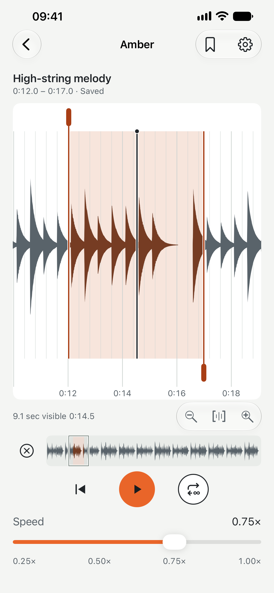
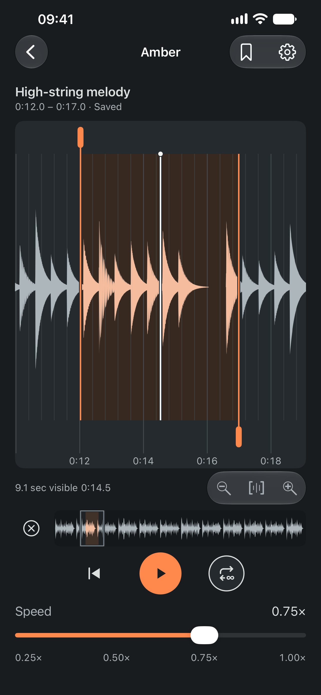
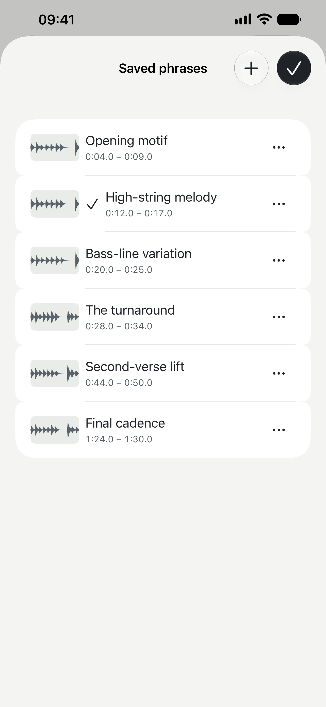
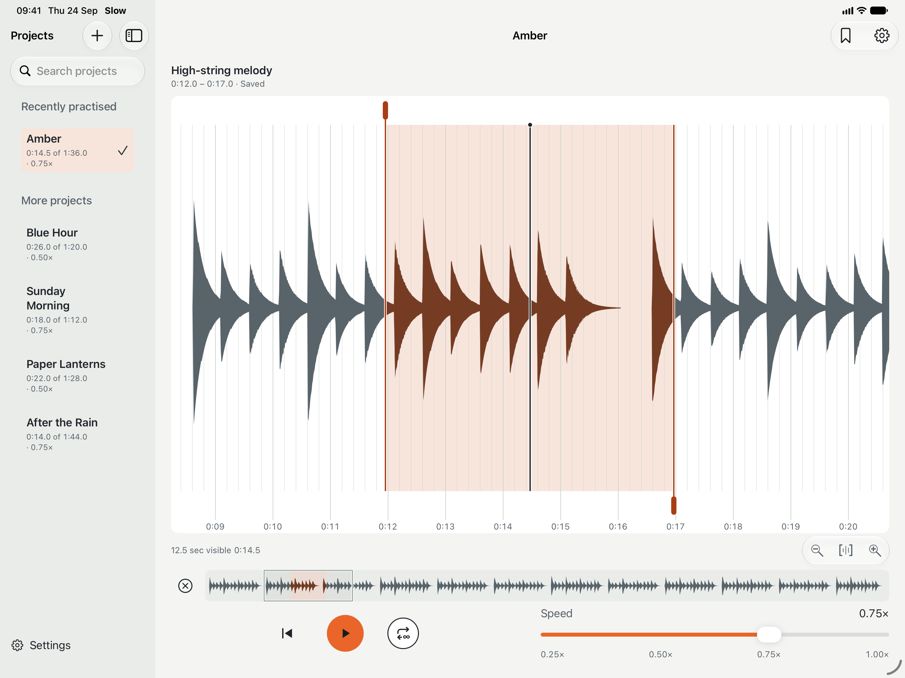

Slow is fast.
Fast is Slow
Intuitive Experience
One phrase.
As many listens as it takes.
Open your own recording, draw a loop around the part you want to learn, and hear it again at a pace that makes sense. No complicated timeline full of tools.
01 / Find your phrase
See the sound.
A responsive waveform makes it easy to land where you mean to. Pinch in for detail, move through the recording, and set the exact start and end of your loop.

02 / Find your pace
Hear it all.
Pitch perfect.
Move from normal speed down to a quarter of the tempo without changing the pitch you hear. Repeat the phrase, play it once, or carry on when you’re ready.

03 / Make it yours
The parts worth keeping.
Save what you want to return to. Name them, revisit them, and pick up again later without finding the same few seconds all over again.
Your projects and phrases can sync privately through iCloud. Managed recordings live in your visible iCloud Drive folder.

Room to listen
At home on every screen.
A focused space for your music on iPhone, iPad and Mac. Practise on one device and find your projects on another when iCloud is available.

The essentials
Everything you need to stay with the music.
Your recordings
Bring audio you already have. Slow takes its own copy to synchronise across your devices via iCloud.
Precise by touch
Navigate the waveform, zoom in, and listen while you drag to find the right place.
One clear focus
Work with one active loop at a time. Keep multiple named phrases ready for later.
Start free
One project and two saved phrases are free. A single in-app purchase for lifetime, unlimited use.
Slow · Learn by ear
Stay a little longer
with the music.
Available on iPhone, iPad and Mac.
Get in touch